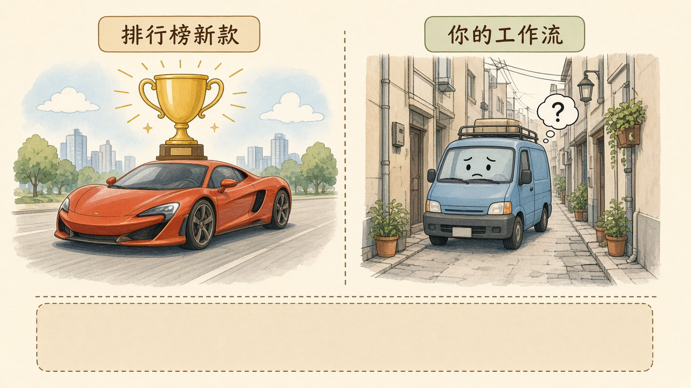
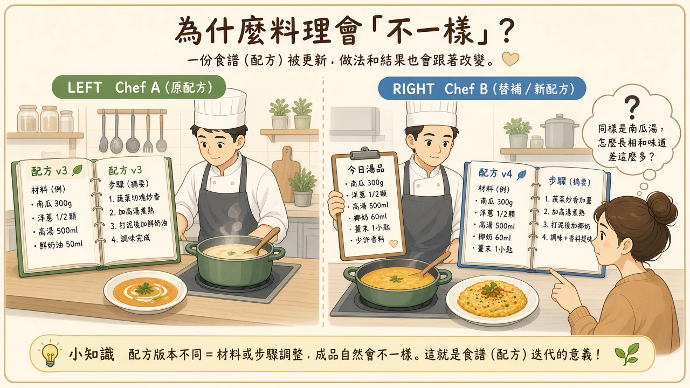
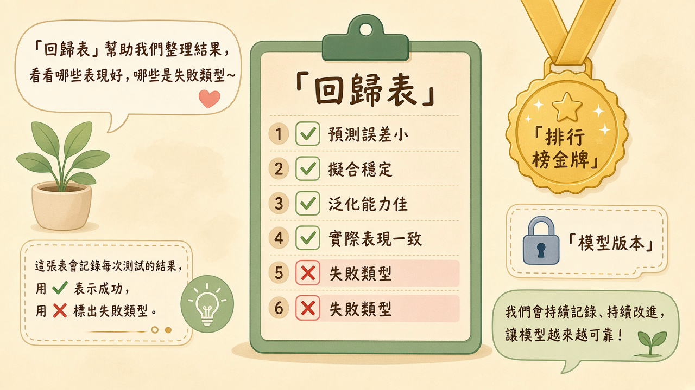

同一句提示、同一條工作流，某天開始答得不一樣。使用者先怪產品「變笨」，工程師把呼叫紀錄翻開，才發現模型或預設被換了。排行榜上的新款可以很亮；真正決定這條路還走不走得通的，是你的流程還認不認得路。
閱讀說明：本文為編輯依常見工程實務整理的科普短文，非整理自單一節目或供應商白皮書；文中不引用未查核的市場數字或產品保證。
公開評測把許多模型放在同一套題目上比較。分數變高，通常表示它在那套題上答得更好，或答得更穩。你的產品面對的是另一套題：固定欄位、固定工具、固定語氣，以及使用者已經習慣的失敗方式。
新模型可能更會寫長文、更會處理開放式問題，卻在你的工單分類裡把「退款」和「換貨」對調，或在摘要時漏掉必須原樣保留的訂單編號。對排行榜，這可能只是眾多題目裡的一小格；對這條工作流，這就是使用者覺得產品變笨的那一天。
兩件事可以同時成立：模型在公開題上更強，你的流程卻變差。比較之前要先寫清楚，產品依賴的是哪一種行為。是守住格式、叫對工具、拒絕編造，還是寫得更流暢。沒有這句話，團隊很容易拿別人的名次，解釋自己線上的故障。
使用者也很少先看到版本號。他們看到的是：昨天這句話會查出正確狀態，今天同一句話開始道歉、打岔，或給一個聽起來完整、其實對不上資料的答案。工程排查要從「哪一個呼叫、打到哪一個版本、帶了哪些設定」開始，而不是從「是不是模型變笨了」開始。
店名沒換，菜單也沒改。後場換了主廚，同一道湯的鹹度、火候和擺盤都變了。客人只記得這家店，不會先去查主廚換屆；他們只會說，今天的味道不對。

插圖：白話科技編輯繪製／AI 輔助，非新聞照片
產品呼叫模型，常常不是寫下一個完整版本，而是寫一個「最新」，或沿用供應商介面上的預設。供應商把別名指到新的權重、帳號被調到新的部署，或某次發布改了預設模型，線上行為就會在沒有產品改版說明的情況下改變。
別名本身是為了方便。風險在於，產品把「方便跟著最新」當成「行為維持不變」。版本一換，推理方式、拒答尺度、工具呼叫的格式都可能一起動。使用者看到的是答案變了，不是版本號變了。
事後要能對上的紀錄至少包括三項：實際打到的模型名稱與版本、呼叫時間、這次是人為發布還是供應商側變更。少了任何一項，團隊就很難分辨是程式改了、設定改了，還是模型換了。
就算模型版本沒動，包在外面的設定也可能被換掉。系統提示被整理過、工具清單少了一支、溫度或輸出長度在介面上被重置、安全過濾從寬改嚴，輸出都會不一樣。這些設定常常散在程式、設定檔和供應商控制台，沒有被收成同一份變更。
溫度只是其中一個旋鈕。任何會改變抽樣、工具選擇或指示優先順序的參數，都該和模型版本放在同一份紀錄裡。只鎖定模型名稱、不鎖定這些設定，生產路徑仍然會在無人審核的情況下改道。
重置特別容易發生在「先在介面上試一個新預設，再回到程式」的時候。試用當下覺得回答更順，正式環境卻沿用了較高的溫度、較短的輸出上限，或少掛了一個查詢工具。同一句提示因此走出另一條路。
模型或設定換了，用來判斷「這次算成功」的東西如果還停在舊印象，團隊就只能等客訴。常見的落差有三種：評測題仍是較早的展示題，沒有覆蓋現在最常被抱怨的流程；成功只留一個平均分，不留失敗長什麼樣子；公司累積的範例、修正和禁則還停在某次對話裡，沒有放進可以重跑的案例。
成功定義要寫得能核對。例如：訂單編號必須原樣保留、不得自行承諾退款天數、工具查無資料時要明講，而不是補一個聽起來合理的答案。這些句子比「回答要有幫助」更能在換代時當尺。
配方從第三版換成第四版，鹽、火候和出菜順序都改了，菜單上仍寫同一道湯。湯端上桌，看起來像同一道菜，喝一口才知道不是。

插圖：白話科技編輯繪製／AI 輔助，非新聞照片
釘版本，是讓生產路徑明確寫下要用哪一個模型版本，以及哪一組關鍵設定，而不是沿用供應商當下標成最新的預設。它和軟體鎖定依賴版本是同一類動作。它不表示永遠不升級，而是把升級變成一次可審核的變更：誰提出、影響哪幾條流程、用什麼案例看過、誰核准。
新模型可以先在旁邊跑同一批案例，確認你在意的失敗類型沒有增加，再決定是否切換。沒有這一步，釘版本只是把意外延後，生產路徑仍可能在下一次「順便更新」時改道。
審核時要看的是實際會被呼叫的那一組值，包含模型版本、系統提示版本、工具清單，以及會改變輸出的參數。介面上顯示的產品名稱，不足以代表這次線上會怎麼回答。
準備一小批不會每次重抽的案例。案例來自真實抱怨或真實工單的脫敏版本，並寫下當時可接受的輸出長什麼樣、不可接受的輸出長什麼樣。每次模型或設定變更，都重跑這一批。
平均分可以上升，同時某一類失敗變多。紀錄至少分成幾欄：案例編號、預期要守住的要點、這次是否守住、失敗屬於哪一類。常見類型包括漏欄位、編造、工具沒用、語氣越界、拒答過度。分數是摘要，失敗類型才是修得到的線索。
這份表不需要一開始就覆蓋全部產品。先覆蓋最常被抱怨、而且結果能由人判讀的那一條流程。案例集本身也要有人維護：流程改了，預期輸出和失敗類型要一起改，否則表會漸漸量到已經不存在的工作。
換代前寫短說明：從哪一組版本與設定，換成哪一組；影響哪些功能；哪些失敗類型若增加就不放行。換代後保留回到上一組已知良好設定的做法，而且要在出問題時用得上，不是只寫在文件裡。
事先約定什麼叫可接受的退化。例如某一類漏欄位從原本守住，變成多次守不住，就先退回，而不是等客訴累積。也約定什麼情況改由人接手：模型拒答、工具失敗，或案例集顯示這條流程已超出門檻。門檻用自己的案例來寫，不借用公開排行榜的名次。
回滾要回到整組已知良好的設定，而不是只把模型名稱改回去、把溫度或工具清單留在新的狀態。否則團隊會以為已經恢復，線上仍走著另一條路。
廚房牆上的金牌很亮，說明這道菜曾經在比賽裡贏過。每天出餐前，還是得看回歸表：這批湯的鹹度、溫度、有沒有漏料，表上有沒有打叉。獎盃不能代替那張表。

插圖：白話科技編輯繪製／AI 輔助，非新聞照片
以下是編輯根據本文延伸的實務建議，不是講者原話，也不是已驗證的研究結論。
生產路徑釘死模型版本與關鍵設定，變更走審核。把線上實際呼叫的模型版本、系統提示版本、工具清單，以及會改變輸出的參數，收成同一份可審核的設定。變更要有人看過影響範圍再上，避免由介面上的預設直接換成新的一組。
維護小型回歸集，記錄失敗類型，不只記錄平均分。為最在意的流程留下固定案例，每次變更重跑，並把失敗分成可命名的類型。平均分只作摘要，不拿來代替失敗清單。
換代時保留回到上一組已知良好設定的做法。上一組模型版本與關鍵設定要能在短時間內恢復，而且恢復的是整組，不是只改回模型名稱。回滾屬於變更流程，要在放行前確認它真的能執行。
挑一條最常被抱怨的流程，固定提示與工具，對舊預設與新預設各跑約 20 筆。約 20 筆是建議的試驗規模，不是測量出來的必要樣本數。輸出一張失敗類型表。驗收方式：每一筆都有案例編號、是否守住要點、失敗類型；你能用這張表向同事說明差異，而不是只報一個平均分。這是初步試驗，不能推廣成所有產品的結論。
以下是編輯根據本文延伸的實務建議，不是講者原話，也不是已驗證的研究結論。
把模型換代當成產品變更，先問影響範圍與負責人。升級不是順手換成一個分數更高的模型。先問會碰到哪些線上功能、誰負責看案例、誰有權核准。沒有負責人的變更，先不要進生產路徑。
事先約定可接受的品質退化門檻，以及改由人接手的條件。和負責這條流程的工程師一起寫下：哪一類失敗變多就要停下，什麼情況改由人處理。門檻用自己的流程語言寫，不借用排行榜名次。
要求示範附帶版本、日期與案例集，才算完整報告。只看一段順暢的回答，看不出換代之後還穩不穩。完整報告要能指出當時的模型版本與關鍵設定、執行日期，以及用了哪一批案例。缺任一項，先補齊再決定要不要擴大。
選一個已經在線上的 AI 功能，問三件事：目前模型版本誰能改、上週是否有人在未經說明的情況下變更、出問題時誰收尾。驗收方式：三個問題都有具名回答，或被明確記成「目前沒有人負責」。把回答留在團隊看得到的地方，供下一次換代前對照。
排行榜可以更新。生產路徑上的版本、設定、案例與回滾，要留在團隊自己核對得到的地方。
本文為編輯依常見工程實務整理的科普短文，非整理自單一節目或供應商白皮書，也不冒充研究結論。文中不引用未查核的市場數字或產品保證。延伸閱讀連回本站姊妹篇，供對照記憶、流程判斷與決策驗證。